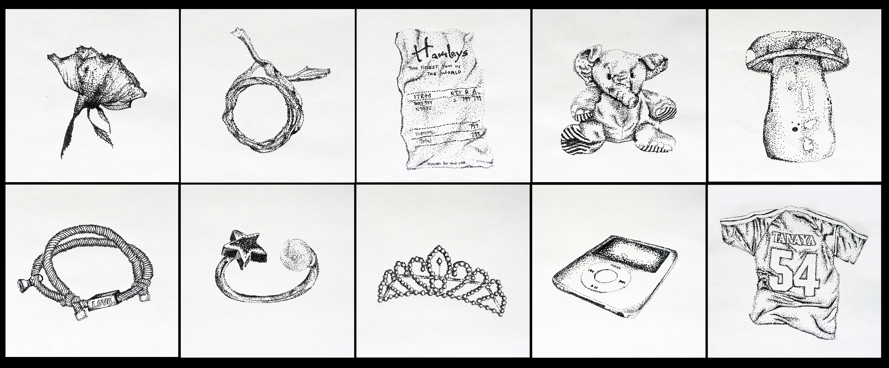
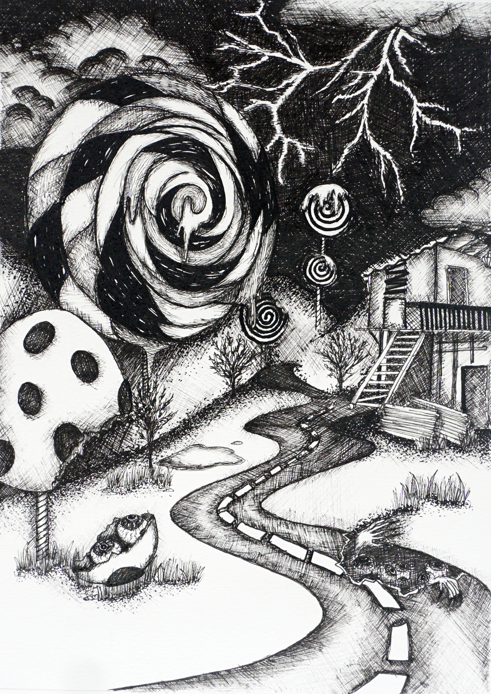
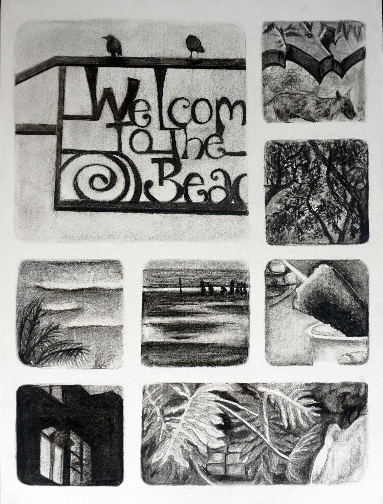

Fine Art
Three series in ink, stippling and charcoal, all about what memory keeps and what it flattens.

Inspired by Candyland, the board game I loved as a kid. Growing up has a way of putting a hard layer over the softer parts of you — the things you liked, the way you used to see the world. This is my version of Candyland: what it looks like when that softness gets pushed under. Ink and hatching draw the contrast between what shows and what does not.

You cannot hold onto moments, only the things that remind you of them. This piece collects objects I kept over the years, each one carrying a memory I was not ready to let go of. Drawn in stippling: a thousand dots forming one image, the same way a thousand small moments form one memory.
Juhu is my childhood neighbourhood and still the place I think of as home. I went back to the same spots and drew them live, letting charcoal do what a photograph cannot — carry the weight of what those places mean. The grid reads like flipping through an old photo album, in black and white because memory has its own rawness.

Credits — Ink, charcoal and stippling. Drawing and photography: Tanaya Agarwal.